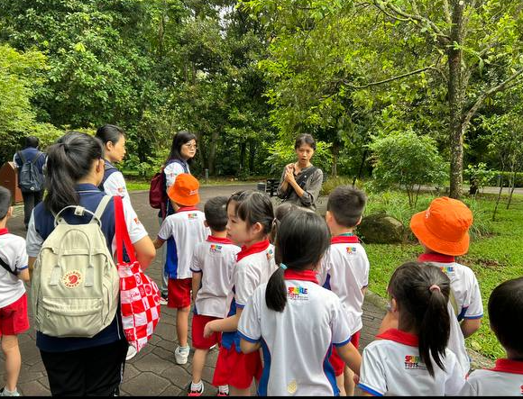

Our Programmes

Animal Welfare Workshops for Children/Youths
Children/Youths are naturally curious about pets and animals. Start your children's learning journey with Animal Welfare Academy!
Find out moreAnimal education workshop for Corporates
Need programmes for Corporate Social Responsibility (CSR), office team bonding or simply to improve mental health in the workspace?
Find out more
Guest Speaker Workshops for Children/Youths
Are you ever curious what does a Marine Conservationist or Veterinarian do? This is your chance to find out!
Find out more
*NEW* Nature walks for children/youths
Led by experienced guides and nature enthusiasts, this workshop is designed to awaken your senses. Learn about the local flora and fauna and spot fascinating wildlife!
Find out moreAbout Us
Our mission
To develop a love for animals in our youths and equip them with the necessary knowledge and skills towards a kinder society for animals.

Education is the key to a more compassionate society towards animals. Without efforts to create awareness, more pets may be surrendered and shelters may continue to be overcrowded.
Messages we hope to teach
Besides animal care and husbandry, we hope to teach the following messages as well.
1. "Patience, compassion and peace-ableness"
Animals teach us valuable life lessons. Some animals may need more time to open up or more training than others. Because of this, they may be given up by their owners. With time and patience, these animals can become great companions.
2. "With animals, we can be vulnerable"
Animals offer a non-judgmental space to allow us to fully be ourselves. They offer unconditional love and bring joy to our lives. We just need to learn to understand and communicate with them.
3. "All animals are sentient beings, they have emotions too just like us."
Like humans, different animals have different personalities. But ultimately, all animals have feelings too.
-
01 Are you a shelter?
No, we are not a shelter, we don't take in animals because we want to focus purely on animal welfare education.
Though we do hope that education in animal welfare could help shelters better cope with their capacity.
-
02 Do you use live animals in your workshops?
Most of our activities involve interaction with live animals. We believe that learning ABOUT animals takes place best WITH animals. Of course, interaction with animals only takes place under strict supervision of our staff and volunteers.
We limit animal interaction to a short time period and we have a strict limited number of students to reduce potential stress to our animals.
We also select animals which are comfortable with human interaction and of course, the animals are allowed to take breaks whenever they want to
-
03 I am allergic to animal fur. Can I still participate in the activities?
You will need to fill up a simple indemnity form before participating in activities with animal interaction. Please declare any form of allergy to animals in the Indemnity form and we will advise you accordingly.
While we hope to make every activity a fun and enjoyable one, your safety is always our priority.
-
04 Do you create a customised programme for companies/schools?
Yes we do! Feel free to drop us a message so we can discuss more.
Our Team

John
Co-founderJohn is a seasoned individual with 8 years of experience in animal care and handling, and 3 years of experience in education.
He is a passionate individual dedicated to empowering young people with the opportunity to learn about and interact with animals.
John is committed to impacting the lives of both animals & people. He is also a loving pet parent, who shares his home with two beloved dogs, Faithful and Chosen.

Stacy
Co-founderStacy has 3 years of experience in animal care and 2 years of experience in education.
When she’s not at work, you can find her volunteering her time in Animal Welfare Groups or more often that not, just spending time with her rabbit at home.
She is passionate about education and believes that animal welfare education is the way to create a future that's kinder to animals.
Nirel
EducatorNirel has 2 years of experience in education and a heart for animals. As a volunteer at a local animal shelter, she has seen the impact that education has on animal welfare.
She believes by teaching children about animal behaviour, habitats, and the impact of human actions on their welfare, we can inspire the next generation to be kind to all creatures.

Ray
Software EngineerRay is a passionate coder with an unwavering determination to solve all "tech issues".
Beyond programming, he exhibits a profound connection with animals. When he's not busy with work, Ray can be found at the neighbourhood around his void deck feeding community cats.

Ariessa
EducatorAriessa is an avid animal lover.
She has turned her passion into her lifestyle by being cruelty-free, eliminating animal products and by-products.
She is also passionate about sharing her knowledge of animal care with others. Drawing from her own experiences, she provides real-life scenarios, making her teachings relevant and meaningful.

Ethan
EducatorEthan is a drama educator who has spent two years inspiring children through play and wonder.
In addition to his love for animal welfare, he is dedicated to the art of storytelling.
Currently working on his music projects, Ethan embraces his role as a freelance, "part-time" everything, so long as Basil (his freshwater angelfish) finishes his worms.
Say Hi!
If you are looking for any programmes for your school/company, feel free to contact us! We don't bite!
Location:
Singapore
Email:
hello@animalwelfareacademy.com